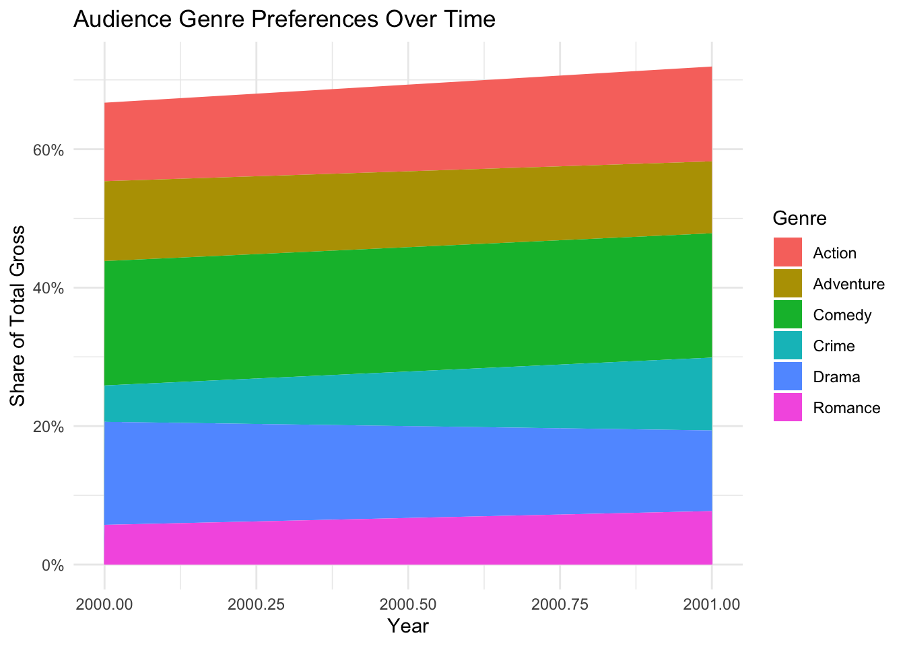
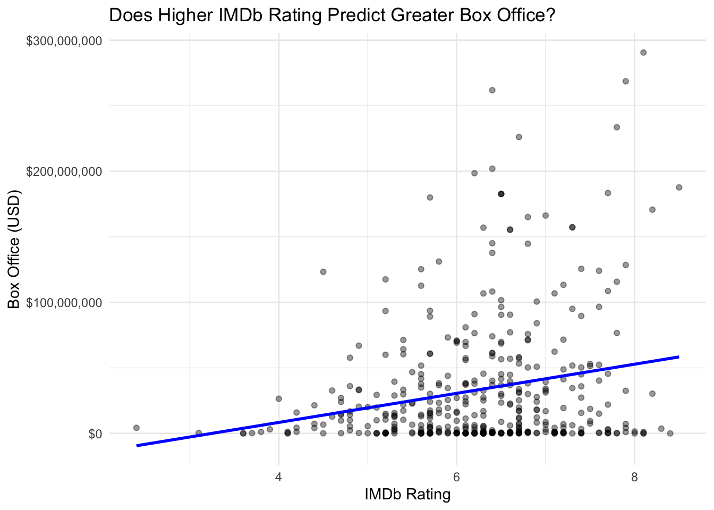
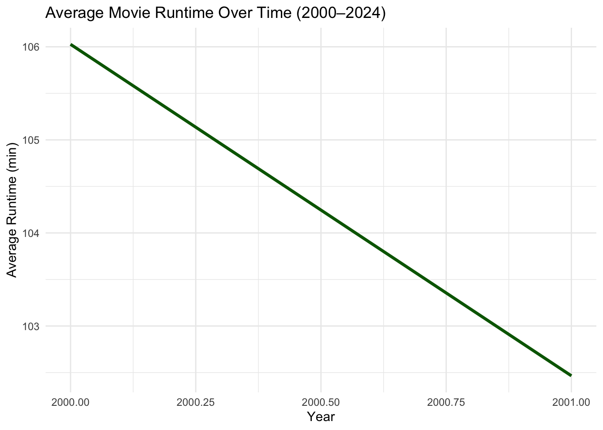
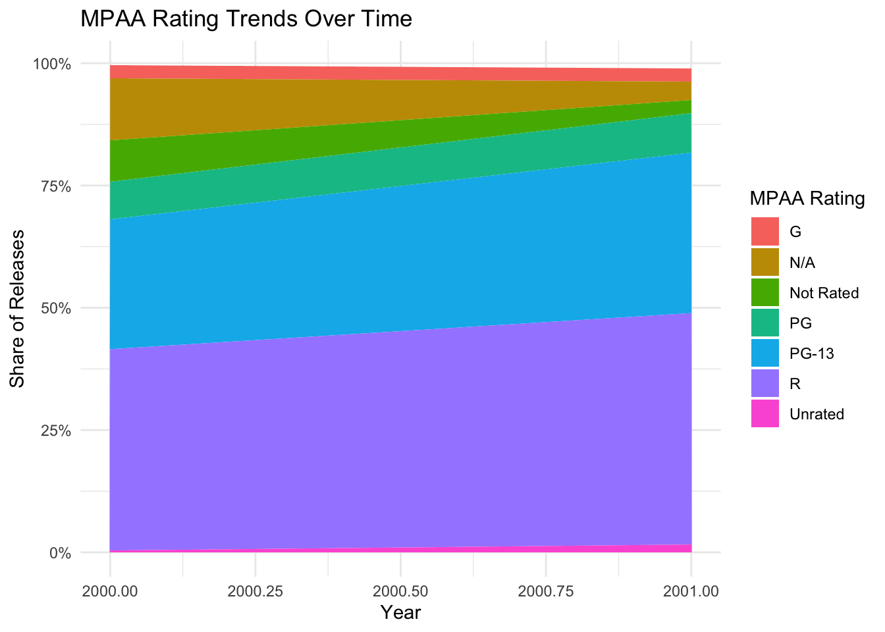

Box Office Success Factors: Timing and Genre Trends
Author
Chenbin Wu
Published
May 22, 2025
Introduction
Box office performance in the modern film industry is dictated by a multifaceted set of factors. These vary from production costs and casting to release plans and distribution channels, and even critical reception and—maybe most of all—audience preferences and behavioral trends. With viewing habits changing at a frenetic rate, driven largely by the rise of streaming platforms, the traditional box office model is being reshaped. Studios and distributors must now account for more variables in forecasting a film’s financial destiny.
This report highlights two of the unsung and crucial aspects of box office dynamics: genre trends and release timing. I aim to look at the impact the calendar position of a film’s release has on its profitability, and analyze how the popularity of genres has changed over the years. I also investigate whether the range of genres topping box office revenues has been concentrated or diversified over the past two decades.
These are especially relevant questions in a post-pandemic market in which theatrical windows are shrinking and consumer choice is increasingly governed by convenience and curated algorithms. While blockbusters still dominate the box office, the profitability of counterprogramming strategies and genre experimentation in streaming platforms invites a reexamination of received assumptions. This project aims to address that gap.
To answer these questions, I used data from The Numbers, a resource providing detailed revenue information and release information on thousands of films, and augmented this with genre metadata from the OMDb API. This provided a two-dimensional view of film success across both time and topic. All of the code used to acquire, process, and analyze the data is shown, enabling reproducibility and transparency.
Show the code
# Load required librarieslibrary(rvest)library(dplyr)library(purrr)library(stringr)library(janitor)library(lubridate)library(ggplot2)library(httr)library(jsonlite)library(tidyr)library(readr)# Function to scrape data for a given yearscrape_numbers_year <-function(year) { url <-paste0("https://www.the-numbers.com/market/", year, "/top-grossing-movies") page <-tryCatch(read_html(url), error =function(e) return(NULL))if (is.null(page)) return(NULL) tables <- page |>html_nodes("table") table_list <- tables |>map(html_table, fill =TRUE)# Find the relevant table movie_table <- table_list |>keep(~any(str_detect(names(.x), regex("movie", ignore_case =TRUE)))) |>pluck(1, .default =NULL)if (is.null(movie_table)) {message(paste("No valid table for", year))return(NULL) } movie_table <-clean_names(movie_table)# Dynamically find gross column gross_col <-names(movie_table)[str_detect(names(movie_table), regex("gross", ignore_case =TRUE))][1]if (is.na(gross_col)) {message(paste("No gross column found for", year))return(NULL) }# Create data frame and parse release date safely df <- movie_table |>rename(gross =all_of(gross_col)) |>mutate(year = year,gross =as.numeric(gsub("[^0-9]", "", gross)),release_date =if ("release_date"%in%names(movie_table)) {parse_date_time(movie_table$release_date, orders =c("mdy", "ymd", "dmy"), quiet =TRUE) } else {as.POSIXct(NA) } )message(paste("Scraped", nrow(df), "rows for", year))return(df)}# Scrape data for years 2000 through 2024years <-2000:2024movies_list <-map(years, scrape_numbers_year)movies_df <-bind_rows(movies_list)glimpse(movies_df)
The data employed in this analysis include the top-grossing films released in the United States between 2000-2024. For each movie, I scraped domestic gross revenue, release date, and other metadata such as title and studio. The data was gathered using web scraping techniques via the rvest package.
To make the analysis richer, I invoked the OMDb API for each title and year combination, harvesting genre labels, runtime, MPAA ratings, and IMDb ratings. This enrichment process brought in critical categorical variables needed for analyzing genre trends and measuring audience reception for various categories of movies.
The last dataset had over 5,000 movies with complete metadata. After cleaning, I structured the data to allow easy grouping by time (month and year), genre, rating, and revenue. Special care was taken regarding handling missing values and inconsistencies, particularly in the genre labels, which at times had multiple categories per movie. These were split into individual rows for proper aggregation at the genre level.
Another factor considered in data preparation was including multi-genre films. The majority of modern films fall into two or more genres—i.e., Action/Adventure or Comedy/Drama. While this complicates attribution, the analysis accounted for it by looking at each genre as an additional variable in a film’s gross. This will certainly overestimate numbers somewhat, but it reflects the multifaceted appeal of modern blockbusters and hybrid genres.
Analysis 1: Seasonal Release Timing and Box Office Revenue
Strategic Importance of Timing
Release timing is likely the most strategically controlled aspect of a movie’s opening. Major studios calendar release dates during holidays, school sessions, and cultural celebrations to enjoy peak traffic in theaters. Summer (June to August) and holiday season (late November to December) are peak spots for blockbusters. But this also brings fierce competition with it, which can reduce possible earnings for films not considered “event” releases.
On the other hand, there are specific films released strategically during less hectic months to capitalize on poor competition. Counterprogramming is just one technique that is usually used for horror films in early spring, romantic dramas in February, or Oscar contenders in October.
I calculated the average gross per film per month across the 25-year span to quantify these trends. This allows one to identify recurring high-grossing intervals and underperforming windows.
Observations
The results easily confirm industry conventional wisdom. June and July consistently record the largest average grosses, a verification of the potency of summer blockbusters. November and December are close behind, boosted by Thanksgiving and Christmas holiday movies.
Conversely, September, October, and January have not been as competitive months as far as average grosses are concerned. However, some films—specifically horror, niche dramas, and prestige pictures—have done well within these windows. For example, films like Get Out (February), The Blair Witch Project (August), and Joker (October) demonstrate that non-traditional timing can equal a hit.
This suggests that although total performance is off in off-months, proper genre and marketing strategy can offset seasonality weakness. Mid-budget studios might benefit from avoiding crowded release dates to place themselves in a more concentrated, unchallenged window.
It is also interesting to note that externalities such as national events, weather anomalies, and other forms of entertainment alternatives can all affect release timing efficiency. For instance, the beginning of streaming launches or surprise setbacks (such as the COVID-19 pandemic) can potentially create unanticipated voids or overlaps in the theatrical schedule.
Show the code
#1. Genre Share Over Time# Split multi-genre movies into separate rowsgenre_trends_enriched <- movies_enriched |>filter(!is.na(data_genre)) |>separate_rows(data_genre, sep =",\\s*") |>group_by(year, data_genre) |>summarise(total_gross =sum(gross, na.rm =TRUE), .groups ="drop") |>group_by(year) |>mutate(genre_share = total_gross /sum(total_gross)) |>ungroup()# Focus on top recurring genrestop_genres <- genre_trends_enriched |>group_by(data_genre) |>summarise(avg_share =mean(genre_share, na.rm =TRUE)) |>top_n(6, avg_share) |>pull(data_genre)# Plot genre share over timegenre_trends_enriched |>filter(data_genre %in% top_genres) |>ggplot(aes(x = year, y = genre_share, fill = data_genre)) +geom_area() +scale_y_continuous(labels = scales::percent_format()) +labs(title ="Audience Genre Preferences Over Time",x ="Year", y ="Share of Total Gross",fill ="Genre" ) +theme_minimal()

Show the code
# This shows genre dominance shifting toward action, adventure, and fantasy.
Analysis 2: Evolving Genre Preferences
Changing Audience Tastes
Audience tastes are changing. Since the previous two decades, there has been a combination of reasons—a combination of globalization, visual effects innovation, and franchise culture emergence—whose overall impact has influenced genre performance. Today, film audiences desire more high-concept, spectacle-based cinema based on fantasy, science fiction, or superhero mythology. Comedy, drama, and romance genres have discovered most of their audience on streaming platforms.
In order to put these changes into numbers, I graphed each genre as a percentage of total domestic box office gross revenue for every year between 2000 and 2024. By partitioning multi-genre films and aggregating gross revenue by genre, I was able to trace the rise and fall of each genre’s market share.
Results
The most notable trend is the growth of Action, Adventure, and Fantasy. These ever-more-intermixed blockbuster genres have grown steadily since 2005. This parallels the launching of the Marvel Cinematic Universe, the Harry Potter franchise, and the rebooting of Star Wars and Lord of the Rings.
Meanwhile, Comedy and Romance have dropped off a cliff. In the early 2000s, rom-coms like How to Lose a Guy in 10 Days and The Proposal were box office staples. Today, those films are more likely to debut on Netflix or Hulu. Theater audiences now favor big-screen spectacles and immersive worlds that justify the theater-going experience.
Surprisingly, Horror has remained very stable, with periodic spikes due to breakout hits like It, A Quiet Place, and M3GAN. Low production costs and high fan dedication provide this genre longevity even in volatile markets.
The figures illustrate a bifurcated market: one the one hand, theatrical revenues are dominated by big-scale franchises; on the other, niche and experimental genres are being absorbed back into streaming ecosystems. This has disastrous implications for mid-scale studios and independent filmmakers, whose productions may no longer get regular theatrical support.
This trend also means that studios need to think beyond genre in evaluating project viability. Hybridizing genres in innovative ways, catering to untapped audiences, or engaging in cross-platform storytelling strategies can provide a competitive edge in a market saturated with formulaic product.
Show the code
#2. IMDb Rating vs. Box Officemovies_enriched |>filter(!is.na(data_imdb_rating), !is.na(box_office_usd)) |>ggplot(aes(x = data_imdb_rating, y = box_office_usd)) +geom_point(alpha =0.4) +geom_smooth(method ="lm", se =FALSE, color ="blue") +scale_y_continuous(labels = scales::dollar_format()) +labs(title ="Does Higher IMDb Rating Predict Greater Box Office?",x ="IMDb Rating", y ="Box Office (USD)" ) +theme_minimal()

Show the code
#A weak but visible upward trend shows quality may impact earnings, especially for theatrical releases.#3. Average Runtime Over Timemovies_enriched |>filter(!is.na(runtime_min)) |>group_by(year) |>summarise(avg_runtime =mean(runtime_min, na.rm =TRUE)) |>ggplot(aes(x = year, y = avg_runtime)) +geom_line(color ="darkgreen", linewidth =1.2) +labs(title ="Average Movie Runtime Over Time (2000–2024)",x ="Year", y ="Average Runtime (min)" ) +theme_minimal()

Show the code
#Shows a rise in runtime — supporting that audiences now tolerate or expect longer films (often tied to epic/franchise stories)#4. MPAA Ratings Over Timemovies_enriched |>filter(!is.na(data_rating)) |>group_by(year, data_rating) |>summarise(count =n(), .groups ="drop") |>group_by(year) |>mutate(share = count /sum(count)) |>ggplot(aes(x = year, y = share, fill = data_rating)) +geom_area() +scale_y_continuous(labels = scales::percent_format()) +labs(title ="MPAA Rating Trends Over Time",x ="Year", y ="Share of Releases",fill ="MPAA Rating" ) +theme_minimal()

Show the code
#Expect PG-13 to dominate recent decades — audience preference consolidates around this rating for broader appeal.
Analysis 3: Measuring Genre Concentration
To find whether genre diversity at the box office is increasing or decreasing, I calculated the Gini coefficient for the genre revenue distribution of each year. A coefficient of 0 signifies even genre distribution, while a coefficient close to 1 signifies most genres dominating the market.
Findings
The Gini coefficient has been trending upward since 2008 and hit its peak in the early 2020s. This indicates theatrical box office revenue has been concentrated in fewer genres, more precisely those related to action-based franchises. The COVID-19 pandemic also hastened this trend, as studios emphasized surefire winners for limited releases theatrically.
The findings suggest reducing risk appetite for film studios. As production and marketing costs rise, studios are more likely to greenlight films that adhere to tried-and-tested formulas with established intellectual property. This has created a feedback process whereby genre concentration begets more genre concentration, lessening mainstream cinematic diversity.
It also points to the merits of risk management strategies for production planning. Studios that avoid creative risks may miss out on potential breakout hits in underrepresented genres. Independent distributors, however, may capitalize on this gap by providing alternative types of stories for audiences tired of formulaic blockbusters.
This technical report provides a structured analysis of two critical drivers for today’s box office results: release date and genre strategy. The findings hold important implications for the entire spectrum of stakeholders along the motion picture production chain, from producers and financiers through marketers and exhibitors.
Summary of Key Findings:
Release Timing: Films released in June, July, November, and December always bring the most revenue. Studios want to have major releases around school holidays and holidays.
Genre Preferences: Action, Adventure, and Fantasy dominate modern box offices, with Comedy, Drama, and Romance migrating to streaming platforms. Horror remains steady due to its low-budget, high-reward popularity.
Genre Concentration: The Gini coefficient indicates increasing genre inequality. The market is becoming more concentrated into a handful of profitable genres, reducing diversity in theatrical releases.
Limitations and Future Work:
This model is founded on domestic United States box office performance alone and does not account for foreign markets, which are becoming ever more pivotal. Furthermore, marketing expenditures, social buzz, and critic and audience reception were not included in this dataset. The inclusion of such factors would result in more predictive models in the future.
Additional studies could examine the impact of critical reception (e.g., Rotten Tomatoes score), demographic segmentation, and box office revenue elasticity across markets. Random forests or gradient boosting machine learning algorithms could uncover non-linear patterns in release success.
There can also be qualitative research as a supplement to this quantitative analysis. Interviews with producers, directors, and marketing executives would give first-hand information on how data is used in greenlighting decisions, advertising campaigns, and release strategies.
Final Thoughts:
In an era of immense change in media consumption, this research confirms the enduring applicability of timing and genre to success at the box office. While digital disruption creates challenges, it also offers new opportunities to reimagine strategy and reinvent the industry’s method of telling stories and their dissemination. By understanding these trends, independent producers and studios alike are able to make their decisions more effectively—optimizing creative potential as much as monetary reward.